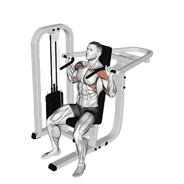

中級平均重量
一般中級訓練者的參考值。
男性
170 lb
女性
76 lb
機械肩推平均重量 [1RM]
| 等級 | ||
|---|---|---|
| 初學者 | 54 lb | 17 lb |
| 初級者 | 102 lb | 40 lb |
| 中級者 | 170 lb | 76 lb |
| 進階者 | 254 lb | 122 lb |
| 菁英 | 350 lb | 177 lb |
註：這些標準是以一般訓練者的 1RM 為基準估算。體重、年齡等個人因素都可能造成差異。詳細資料請參考下方表格。
機械肩推力量標準(lb)
男性按體重(lb)資料 [1RM]
| 體重 | 初學者 | 初級者 | 中級者 | 進階者 | 菁英 |
|---|---|---|---|---|---|
| 110 | 21 | 51 | 96 | 156 | 225 |
| 120 | 27 | 60 | 109 | 171 | 244 |
| 130 | 33 | 69 | 121 | 186 | 261 |
| 140 | 40 | 78 | 132 | 200 | 278 |
| 150 | 46 | 87 | 143 | 214 | 294 |
| 160 | 52 | 95 | 154 | 227 | 310 |
| 170 | 58 | 104 | 165 | 240 | 325 |
| 180 | 65 | 112 | 175 | 252 | 339 |
| 190 | 71 | 120 | 185 | 264 | 353 |
| 200 | 77 | 128 | 195 | 276 | 367 |
| 210 | 83 | 136 | 204 | 287 | 380 |
| 220 | 89 | 143 | 214 | 298 | 392 |
| 230 | 95 | 151 | 223 | 309 | 405 |
| 240 | 101 | 158 | 232 | 320 | 417 |
| 250 | 106 | 165 | 240 | 330 | 428 |
| 260 | 112 | 172 | 249 | 340 | 440 |
| 270 | 118 | 179 | 257 | 349 | 451 |
| 280 | 123 | 186 | 265 | 359 | 461 |
| 290 | 129 | 193 | 273 | 368 | 472 |
| 300 | 134 | 199 | 281 | 377 | 482 |
| 310 | 139 | 206 | 289 | 386 | 492 |
男性按年齡資料 [1RM]
| 年齡 | 初學者 | 初級者 | 中級者 | 進階者 | 菁英 |
|---|---|---|---|---|---|
| 15 | 46 | 87 | 144 | 216 | 298 |
| 20 | 53 | 100 | 165 | 247 | 341 |
| 25 | 54 | 102 | 170 | 254 | 350 |
| 30 | 54 | 102 | 170 | 254 | 350 |
| 35 | 54 | 102 | 170 | 254 | 350 |
| 40 | 54 | 102 | 170 | 254 | 350 |
| 45 | 51 | 97 | 161 | 241 | 332 |
| 50 | 48 | 91 | 151 | 226 | 311 |
| 55 | 44 | 84 | 140 | 209 | 288 |
| 60 | 41 | 77 | 128 | 191 | 263 |
| 65 | 37 | 70 | 115 | 172 | 238 |
| 70 | 33 | 62 | 103 | 155 | 213 |
| 75 | 29 | 56 | 92 | 138 | 191 |
| 80 | 26 | 50 | 83 | 124 | 170 |
| 85 | 24 | 45 | 74 | 111 | 153 |
| 90 | 21 | 40 | 67 | 100 | 138 |
女性按體重(lb)資料 [1RM]
| 體重 | 初學者 | 初級者 | 中級者 | 進階者 | 菁英 |
|---|---|---|---|---|---|
| 90 | 8 | 25 | 53 | 92 | 139 |
| 100 | 10 | 28 | 58 | 98 | 146 |
| 110 | 11 | 31 | 62 | 103 | 153 |
| 120 | 13 | 34 | 66 | 108 | 159 |
| 130 | 15 | 37 | 70 | 113 | 164 |
| 140 | 17 | 39 | 73 | 117 | 170 |
| 150 | 18 | 42 | 76 | 122 | 175 |
| 160 | 20 | 44 | 80 | 126 | 180 |
| 170 | 21 | 46 | 83 | 130 | 184 |
| 180 | 23 | 48 | 86 | 133 | 189 |
| 190 | 24 | 51 | 88 | 137 | 193 |
| 200 | 26 | 53 | 91 | 140 | 197 |
| 210 | 27 | 55 | 94 | 143 | 201 |
| 220 | 28 | 57 | 96 | 147 | 204 |
| 230 | 30 | 58 | 99 | 150 | 208 |
| 240 | 31 | 60 | 101 | 152 | 211 |
| 250 | 32 | 62 | 103 | 155 | 215 |
| 260 | 34 | 64 | 106 | 158 | 218 |
女性按年齡資料 [1RM]
| 年齡 | 初學者 | 初級者 | 中級者 | 進階者 | 菁英 |
|---|---|---|---|---|---|
| 15 | 14 | 34 | 65 | 104 | 151 |
| 20 | 16 | 39 | 74 | 119 | 173 |
| 25 | 17 | 40 | 76 | 122 | 177 |
| 30 | 17 | 40 | 76 | 122 | 177 |
| 35 | 17 | 40 | 76 | 122 | 177 |
| 40 | 17 | 40 | 76 | 122 | 177 |
| 45 | 16 | 38 | 72 | 116 | 168 |
| 50 | 15 | 36 | 67 | 109 | 158 |
| 55 | 14 | 33 | 62 | 101 | 146 |
| 60 | 13 | 30 | 57 | 92 | 133 |
| 65 | 11 | 27 | 51 | 83 | 120 |
| 70 | 10 | 25 | 46 | 75 | 108 |
| 75 | 9 | 22 | 41 | 67 | 97 |
| 80 | 8 | 20 | 37 | 60 | 86 |
| 85 | 7 | 18 | 33 | 53 | 77 |
| 90 | 7 | 16 | 30 | 48 | 70 |
註：機械與纜繩設備的標示重量會因品牌與結構而異，請作為相同條件下的比較參考。
目標肌群
| 分類 | 肌群 |
|---|---|
| 主動肌 | 三角肌 |
| 輔助肌群 | 斜方肌, 肱三頭肌, 肱二頭肌 |
| 穩定肌群 | 腹外斜肌 |
| 握力 | 前臂屈肌群 |
用 Shiba App 記錄與分析
集中查看重量、次數與進步變化。
表格說明
| 等級 | 說明 | 分布 |
|---|---|---|
| 初學者 | 掌握正確動作，並持續訓練至少 1 個月。 | 後 5% |
| 初級者 | 持續規律訓練至少 6 個月。 | 前 80% |
| 中級者 | 持續規律訓練至少 2 年。 | 前 50% |
| 進階者 | 持續規律訓練超過 5 年。 | 前 20% |
| 菁英 | 針對該動作專項訓練超過 5 年。 | 前 5% |